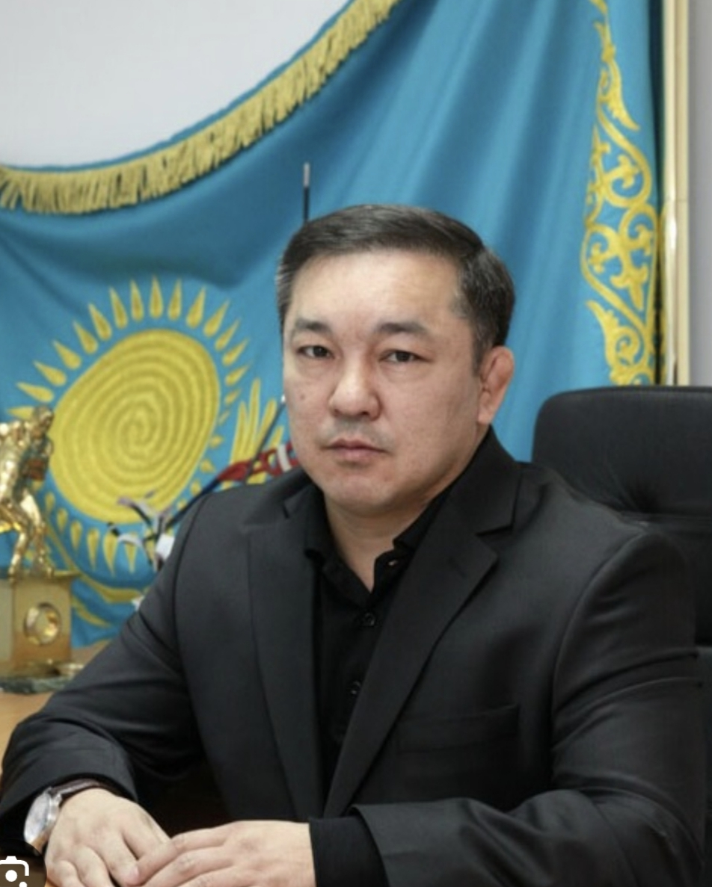
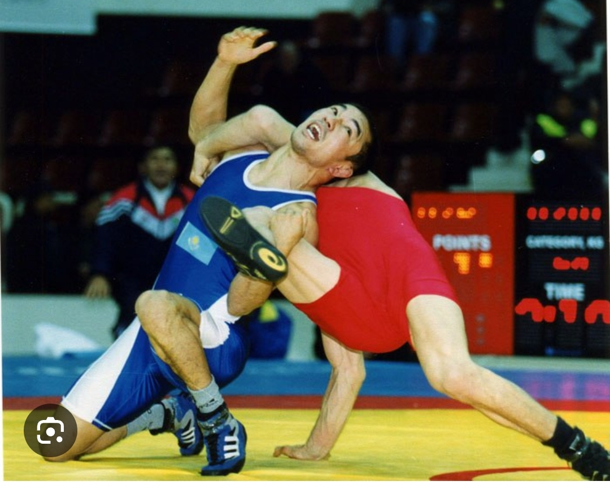
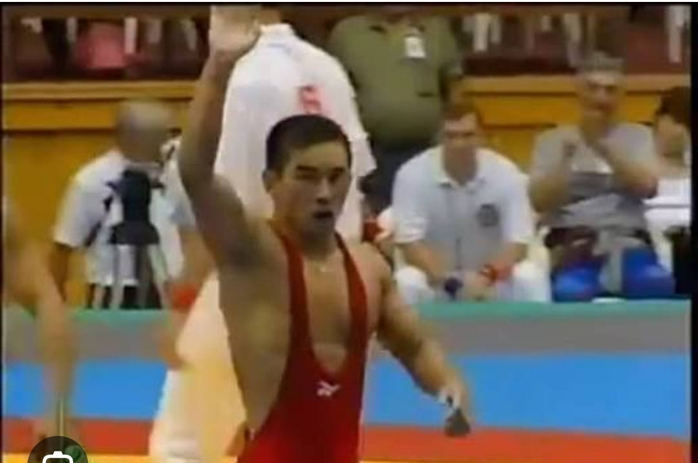
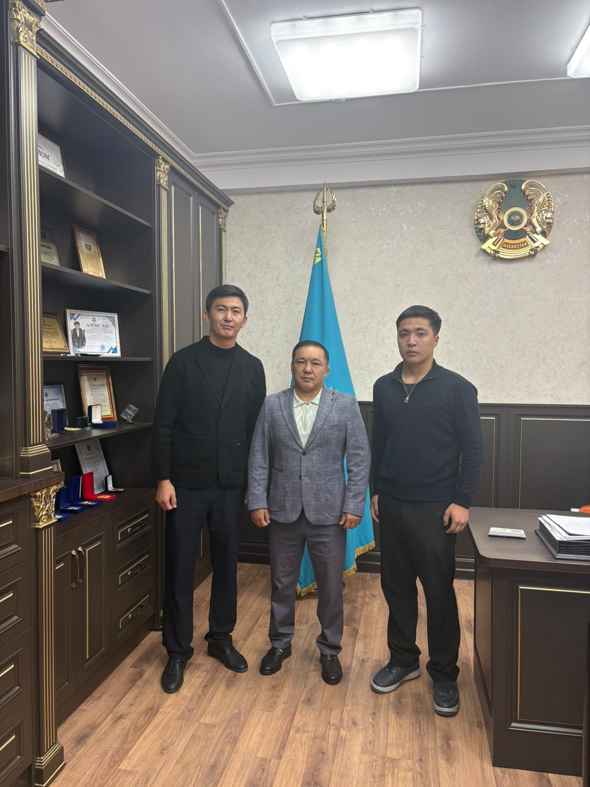
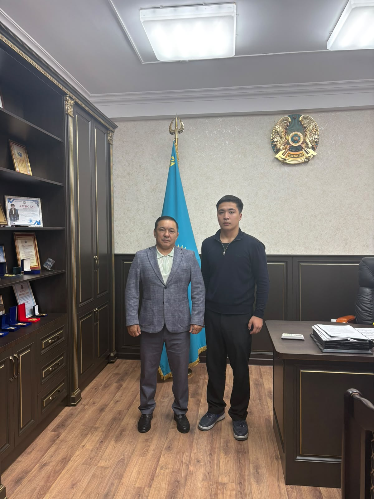

«Жетісу өңірінің спорттық дамуына үлес қосқан тұлға: 1996 жылғы Атланта Олимпиадасының қола жүлдегері»
Өмір жолына шолуСпорттық мансаптан сақталған сәттер. Үлкейту үшін суретті басыңыз.


Бұл жоба аясында біз Олимпиада жүлдегері Мәулен Сатымбайұлы Мамыровпен арнайы кездесіп, оның спорттық жолы, өңір спортының дамуы және жастарға айтар ақылы туралы эксклюзивті сұхбат алдық.


Тәуелсіз Қазақстан тарихындағы елеулі сәт: Мәулен Мамыровтың 1996 жылғы Атланта Олимпиадасындағы жүлделі белдесуі.
Мәулен Сатымбайұлы Жетісу өңірі, Қаратал ауданына қарасты Ақиық ауылында дүниеге келген.
Бұл өңір – талай мықты палуандар мен қайраткерлерді түлеткен қасиетті жер. Осы жерден басталған жол оны әлемдік аренаға алып шықты.